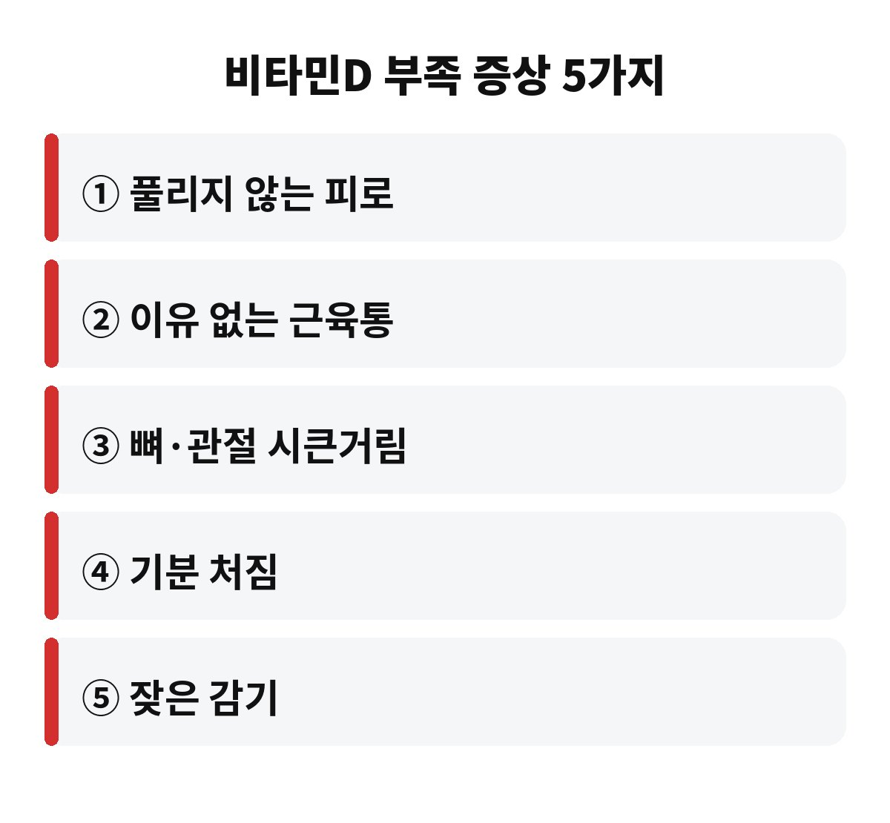
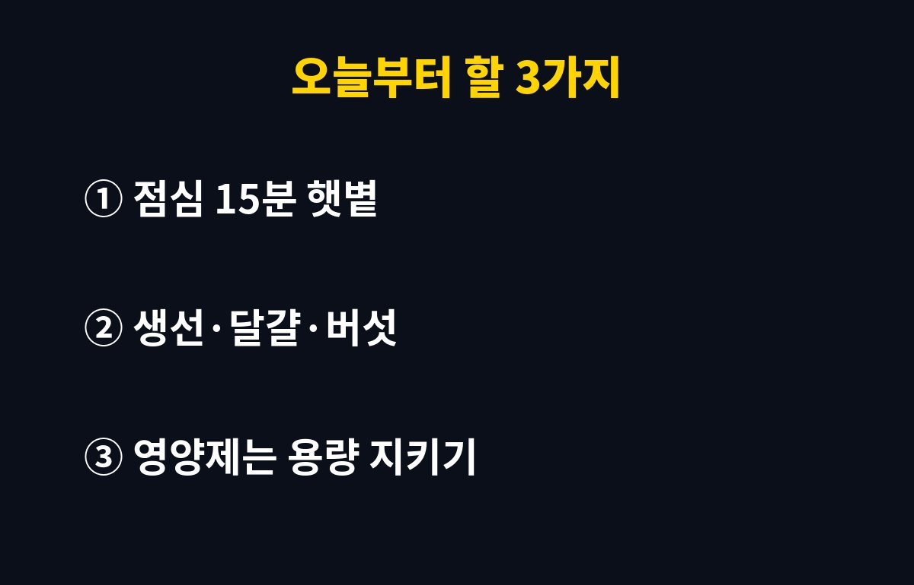

비타민D 부족 증상은 만성 피로, 잦은 근육통, 뼈·관절 시큰거림, 기분 처짐, 잦은 감기 이렇게 5가지가 대표적이에요. 하루 대부분을 실내에서 보내는 40·50대라면, 내 피곤함이 나이 탓인지 햇볕 부족 탓인지 궁금하시죠?
11월이 되면 해가 짧아지고 옷은 두꺼워져서, 피부로 햇볕을 받을 시간이 확 줄어듭니다. 비타민D는 음식보다 햇볕으로 만들어지는 양이 많은 영양소라서, 이 시기에 부족해지기 쉬워요. 오늘은 비타민D 부족 증상을 하나씩 짚어보고, 오늘부터 할 수 있는 방법까지 쉽게 풀어볼게요.
첫 번째는 충분히 자도 풀리지 않는 피로예요. 잠을 잘 자도 아침부터 몸이 무겁다면 한 번쯤 의심해볼 만합니다. 두 번째는 특별히 운동하지 않았는데도 오는 근육통, 세 번째는 뼈와 관절이 시큰거리는 느낌이에요. 비타민D는 칼슘이 뼈에 자리 잡도록 돕기 때문에, 부족하면 뼈 건강에도 영향을 줍니다.
네 번째는 괜히 기분이 가라앉는 날이 늘어나는 것, 다섯 번째는 감기에 자주 걸리는 것이에요. 물론 이 증상들은 다른 원인으로도 생기기 때문에, 하나만 있다고 해서 비타민D 때문이라고 단정할 수는 없어요. 그래도 여러 개가 겹친다면 그냥 넘기지 않는 게 좋겠죠?
비타민D는 피부가 햇볕의 자외선을 받아야 만들어져요. 그런데 가을이 깊어지면 해가 짧아지고 햇빛의 각도도 낮아져서 만들어지는 양이 줄어듭니다. 여기에 출퇴근은 지하철과 사무실, 점심은 건물 안에서 먹는 직장인이라면 햇볕을 쬘 시간이 더 줄어들죠.
또 선크림을 꼼꼼히 바르고 마스크나 모자까지 쓰면 피부에 닿는 자외선이 더 줄어요. 자외선 차단은 피부 건강에 꼭 필요하지만, 그만큼 비타민D는 다른 방법으로 챙겨야 한다는 뜻이기도 합니다. 유리창 너머로 들어오는 햇빛도 비타민D 합성에는 거의 도움이 안 된다고 알려져 있어요.
| 부족하기 쉬운 사람 | 실내 근무 직장인, 야외 활동이 적은 중장년, 선크림·긴 옷을 늘 챙기는 사람 |
| 의심 신호 | 피로, 근육통, 관절 시큰거림, 기분 처짐, 잦은 감기 |
| 가장 확실한 확인 | 병원 혈액검사 |

가장 쉬운 방법은 낮 시간에 잠깐이라도 밖에 나가는 거예요. 점심시간에 15분 정도 팔과 얼굴에 햇볕을 쬐며 걷는 것만으로도 도움이 된다고 알려져 있어요. 다만 한여름 같은 강한 햇볕에 오래 있는 건 피부에 부담이 되니, 무리하지 않는 선에서요.
음식으로는 연어, 고등어 같은 기름진 생선, 달걀노른자, 버섯류가 비타민D를 함유한 대표 식품이에요. 말린 버섯은 햇볕에 한두 시간 널어두면 비타민D가 늘어난다는 이야기도 많이 알려져 있죠. 물론 음식만으로 충분히 채우기는 쉽지 않아서, 영양제를 고민하는 분도 많습니다.
여기서 가장 많이 하는 실수가 있어요. 좋다니까 무조건 많이 먹는 거예요. 비타민D는 지용성이라 몸에 쌓일 수 있어서, 과하게 먹으면 오히려 몸에 해로울 수 있습니다. 그래서 영양제는 제품에 적힌 섭취 방법을 지키고, 이미 다른 종합비타민이나 칼슘제를 먹고 있다면 성분표를 꼭 확인해야 해요.
내 몸에 정말 부족한지 궁금하다면 병원에서 혈액검사로 확인할 수 있어요. 신장 질환이 있거나 복용하는 약이 있는 분은 특히 먼저 의사와 상의하시는 게 안전합니다. 오늘 점심에는 책상에서 벗어나 햇볕 아래 잠깐 걸어보면 어떨까요? 여러분은 요즘 하루에 햇볕을 얼마나 쬐고 계신가요?
마지막으로 기억할 점이 있어요. 비타민D 부족은 하루 이틀에 생기지도, 하루 이틀에 채워지지도 않습니다. 꾸준히 햇볕을 쬐고 식단을 조금씩 바꾸는 습관이 가장 현실적이에요. 겨울이 오기 전에 생활 패턴부터 한 번 점검해보세요. 작은 습관 하나가 올겨울 컨디션을 크게 바꿔줄 수 있습니다.

도움이 되셨다면 구독과 공감 부탁드려요. 다음에도 생활에 도움 되는 건강 이야기로 찾아올게요.
※ 이 글은 일반적인 건강 정보이며 진단·치료를 대신하지 않습니다. 증상이 있다면 반드시 전문의와 상담하세요.